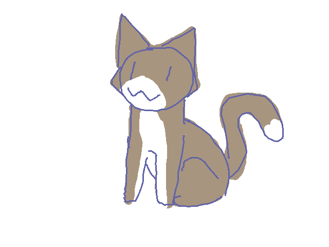

Student Number:s3916911
Student Email:s3916911@student.rmit.edu.au
My name is Elliot Chhin, student number s3916911, s3916911@student.rmit.edu.au. I was born here in Victoria but my parents are Cambodian. I don’t follow any religions. I graduated highschool in 2020 and I primarily speak English. I can speak a little of Khmer, Cambodia’s native language, however I am absolutely terrible with it and I sound like a badly translated movie dub if I try to speak.
I have a white cat named Civi who we rescued as a kitten from our garden 2 years ago where she was skinny, filthy, flea covered, parasite ridden, and sunburnt. Nowadays she’s a chubby, spoiled cat who always wants to go out on walks. I also have a fishpond with a whole bunch of goldfish swimming around.
In my freetime I enjoy playing video games of which are, but not limited to fps games, indie’s, rogue likes and RPG’s. The problem though is that games are a huge time sink and nothing productive gets done, so I’ve been weaning myself off of them and replacing the time spent with drawing instead.
The most appealing thing to me in IT has to be the more graphical aspect of things. Although I have absolutely no expertise in it, 3D modeling interests me greatly. Whether it’s creating characters for video games or to make designs for 3D printing, having the ability to create as an avenue into artistic creativity seems like the most fun and fulfilling thing to do. Of course it is not without having extensive knowledge in the field to be able to succeed. Designing graphical interfaces or to make websites pretty and efficient to use is also another interest of mine. This interest in this side of IT probably stems in early highschool where I’d pay particular interest in how games work behind the scenes, and wondering the processes behind it.
I guess I’ve come to RMIT to study because it is one of the better options, compared to the other university institutions. The facilities on campus are quite nice, boasting gigantic buildings with classrooms kitted with quality equipment. The institution has a great principle of respect, paying respects to the aboriginals who once lived on this land, as well as respecting other cultures and genders.
What I hope to learn during my time in this program are the core skills in computer skills, basic knowledge that serves as the framework that will allow me to expand and branch out into the more specialist fields, such as software development, Data Science or Business Analyst. I’m also hoping that it’ll also pave the way into new hobbies for me, such as enjoying computer work and 3D modeling or game development.
This job posting offers the position of a software developer, particularly in developing softwares for businesses and stakeholders that will provide the infrastructure for their systems. These systems are most likely data and information systems where database management systems would need to be implemented. This isn’t my absolute final preference for my most ideal job, but it provides a good starting point for a career choice when I am finished with my studies. What appeals to me in this job is that they’re hiring fresh graduates, which should be very easy to get accepted in. Developing softwares for businesses would also help to build my expertise and provide skills to put into my portfolio, to then be hireable for higher paying positions at more prestigious companies.
The job listing states that it is looking for people fresh out of university, ie. they’ve finished their computer science programs or other similar programs. As they’re hiring software developers, this requires a skill set pertaining to software development, unsurprisingly. This would include programming skills and knowing how to use a range of programming languages such as Python, Java or C++, to name a few. Database systems will need to be implemented, so knowing how to operate database management systems will be of importance. Related to this, data science is a field that would be required as we will most likely be working with business analysts.
My current skills are, to say the least, very lacking. I have a very basic introductory skill set in Python, and am currently in the process of learning how to build an HTML website. I know a little about UX design, but not color theory though. I don’t have any qualifications or experience pertaining to computer science.
In order to actually be hireable, I need to garner all of these skill sets required to become a software developer. This will primarily be accomplished by simply being enrolled in this current program, Computer Science, and graduating from it. Along the way, I most likely will be developing my own mock softwares as practice to build on the necessary knowledge. I’ll also learn how to effectively design software designs, utilizing design principles to create an attractive and efficient design.
Looking at the results of the Myers-Briggs test is quite worrisome to me. I am a very introverted person, but that’s something that I already know. This would mean that my preferred working environment would be in a quiet, isolated area, which is true to some extent. However I have been finding solace in working in groups, as I’ve been finding that talking with other people, sharing ideas and just plain old banter is very fulfilling and allows for more creative juices to flow. The results of my “energy” and “nature” levels are quite moderate. Not much to comment on there. Apparently I am quite prospective, meaning I am quite opportunist and like to lay low for a perfect option to pass by. I am not a fan of this trait though as it also means, to me, that I am quite docile in my decision making, too docile. I am terrible with deciding things and having to make important decisions is quite anxiety-inducing. This is a good indication of an area I need to work on to improve myself on how I tackle day-to-day tasks and decision making. The last trait lists me as turbulent, which I fully agree with. I am very self conscious to the point where it becomes detrimental to my well being and social life. This is an important area for me to work on as it would improve my attitude to daily life as well as work flow, making me more productive.
Obviously if I want to succeed in working in a group, I need to greatly improve my work attitude and be a much more outgoing person. Talking and sharing ideas is important. I do see the merit in doing this though, and it is very rewarding to talk with other people and share our brain power. I’m hoping that I can work on myself in the areas of the test results to better myself and to be of actual value to my team members.
These results seem to indicate that I wouldn’t perform extremely well in a team-oriented environment. Communication is vital, and I am quite reclusive in nature so this area would be lacking. Making decisions and directing the course of the project requires great decision making and discipline, which I am also lacking in. Otherwise, in all the other areas such as typing up ideas and completing my portion of the project should be of a standard pace.
Link to Learning style test results
According to this website, I am a visual type learner. The learning style that suits me best is one that has visual aid to accompany any written material. Pictures, charts and diagrams are more effective in conveying information to me than just plain text. I am also more engaged while listening to lecturers in-person, not so much when listening to an online lecture where the direct human aspect of learning is very limited. A more hands on approach also allows for a more effective learning experience, but I am less attuned with this method than the first. It is still helpful to have live demonstrations of the learning material. According to my results, I am not so much an auditory learner which I agree with. I do not retain as much information from purely listening, and I get easily distracted from other sources of noise.
Score = 47
I do think of myself to be quite creative but to be honest to myself, I’m not as creative as I could be and my test results also indicate that, as it’s only a middle range score. I believe I’m too “realistic” in my approach to thinking up new ideas, as I tend to disregard a whole field of ideas while brainstorming for fear of them not being original enough or plain uninteresting. And whatever ideas I do come up with, I shoot them down most of the time for the same reasons. I do not tend to share my ideas with others, but in a group setting I am a little more laxed in what I choose to share.
This project will revolve around being a mobile app, and by extension, a computer application as well. The app will be relating to everything to do with art, such as museum pieces, paintings, sculptures and drawings. However the main focus will be relating to the user’s own art works. The function of this app is an Alternate Reality function, where the user will use their phone to take pictures of anything to do with art and analyze the art piece, which would be any of the mediums previously mentioned. There will be an image hosting platform, similar to the likes of Deviant art or Instagram, where users can create an account and upload images of art to it. Fundamentally, this app will be an AR program, act as a repertoire of art knowledge and an image hosting platform.
The inspiration behind this app stems from my large interest in art. In my spare time I enjoy doodling into a sketchbook, but not creating anything special. I am still very much a beginner in the field, but I do have a moderate grasp in the fundamentals of art. There are millions of other aspiring artists out there who, just like me, are always wanting to get better. I strongly believe that in developing an app like mine, this would help inspire and assist people in improving their art and having a great tool to quickly access information relating to art. If not, then at the very least it will be a fun and accessible way for regular people to indulge in this fantastic medium to learn more about it.
The main feature of this mobile application will be its AR utilization. Users will use their phone to take a picture of any artform they wish to, whether it be from a renowned artist, a sculpture in a park, a painting or their very own piece of art. They may also upload images to the app. From here the app will scan and analyze the artwork where it will identify and explain to the user, if it is a historic piece of art, information about it ranging from the artist’s name and brief history behind it, to the techniques and art principles that were implemented to create this.
The app will most of the time pull this information from the internet, if not then it will specifically only display information relating to the art techniques behind the artwork. This is because the app will also act as a repertoire of art knowledge and fundamentals. The user can always tap into the information section and read up on a large repository of information, which will contain guides, beginner tutorials, a crash course on the principles of art, and just general knowledge on whatever artforms the user may be interested in. Painting will be one, where the user can learn about types of paint, brushes, techniques to use with the brushes, and ways to preserve their work. People interested in drawing can learn about different art styles, figure sketching, pencils or what type of paper to use. There will also be a section dedicated to digital art.
There will also be an image hosting platform to accompany this app. Users will be able to create an account and interact with other uses to share images and discuss anything to do with art. People can take pictures of anything and upload anything interesting that they find along with the background information that the AR function extracted, such as things they find at museums. A page of the image will be automatically generated, with the app formatting any of the relevant information and links. Users can click on these uploaded images and read about the information, commenting about anything else that’s interesting.
Users can also upload their own artworks, either as a way to receive feedback or to display to other users the generated information about their art. This would allow for people to learn from other artists who may be more experienced on what types of art techniques that they used. There may also be a function within the app that allows users to click on anything they want to learn more about, to then be redirected to a webpage or youtube link on a relevant tutorial to the subject.
The app will also feature a ranking and pricing function. The software would be able to analyze the image to rank it on a certain skill level, determining how well art principles and techniques are utilized, the framing of the subject and overall how nice the art is. There is no way for this system to be perfect, so there will also be input from other users as well where they’d be able to rank how well the art performs in different categories, as well as agree or disagree on how well the system ranked it.
Similar to this system is a pricing function which would primarily be utilized by users who are commission artists. Users can input into the system the amount of time spent on the artwork, materials used, and along with the things analyzed in the ranking system, the app will determine the price of an artwork. This will allow a user to properly gauge themselves and their art to help them price their artworks accordingly. It is possible for a market system for users to buy and sell artworks to be a part of the app, but I’m afraid it’d be out of the scope of the project and could stray away from the main focus of the app, which is to just be a tool for artists to improve themselves.
There will also be a desktop version of this app, but there would be less resources delegated into it. It would only have the image uploading feature which will still allow users to scan images or upload their own artworks.
With all of these uploaded images, the application can classify the images and sort them into whatever categories they fit into, with the appropriate tags for filter functions. Users can scroll through different categories of art works and choose any tags to filter out what they’d like to see. There will also be a category for posting image references, references being any sort of picture such as a person making an interesting pose or a picture of an apple. This category would be valuable for anyone needing a reference image to assist them in creating artwork.
Art mediums such as animation, 3D art, music or any other niche mediums won’t be implemented at this stage as it most likely would be too complicated for the app to analyze and handle. However at later stages it may be implemented, if the app becomes popular enough or there’s high enough demand for them, then it would be worth it to delegate resources to accommodate these extra art styles.
There are many mobile phone platforms such as IOS and Android which use their own technology and programming languages, which is something that needs to be factored in developing this app. There are a good amount of app development tools that exist. One tool is Apache Cordova. This software allows for multiple languages such as HTML and CSS and should allow for an easy time in developing the project idea. A computer will be used to develop the app. In order to store any data such as user data and images uploaded, servers will need to be bought. Cloud storage will be used to upload user data.
The app will be doing a lot of heavy image analysis, which would require a lot of machine learning. This is the sort of stuff that Google captchas are doing. Considering the pretty big scope of the project, there will need to be very extensive machine learning implemented. This field of study is a part of the program Computer Science, where hopefully I will learn whatever necessary information I’ll need to implement machine learning. It seems like a pretty difficult thing to learn, especially with my current skill set, which is basically nothing.
In the off chance that this crazy idea takes off, this would become a pretty amazing art resource for many young or experienced artists. People will have access to an on-demand tool that will allow them to very easily know anything about any sort of art, or to learn more about their own artwork and how to better improve themselves. If anyone was struggling to find any sort of accessible learning resource, this app would remedy this issue. I’m hoping that for any aspiring artists out there, this app would be an effective catalyst in moving their art hobby or career forward and help them realize their own potential.
Miller, The Best 7 Free and Open Source App Development Software Solutions, GoodFirms, 26/03/2022, https://www.goodfirms.co/blog/best-free-and-open-source-app-development-software-solutions
Animation source: Shake Art Deluxe, Newgrounds, studioNOKOI
Favicom maker:https://www.favicon.cc/